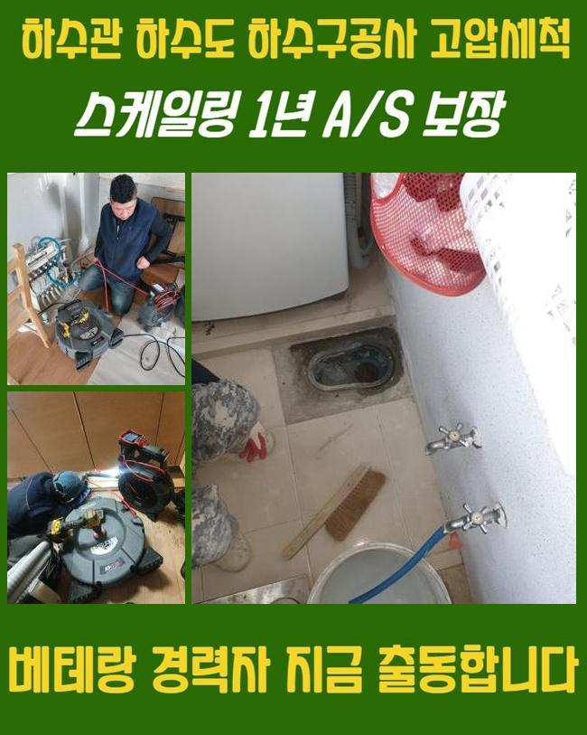
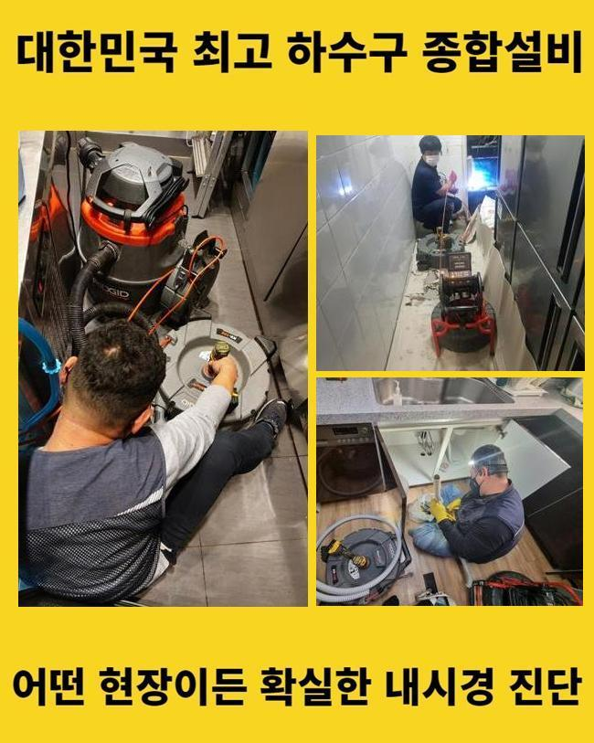
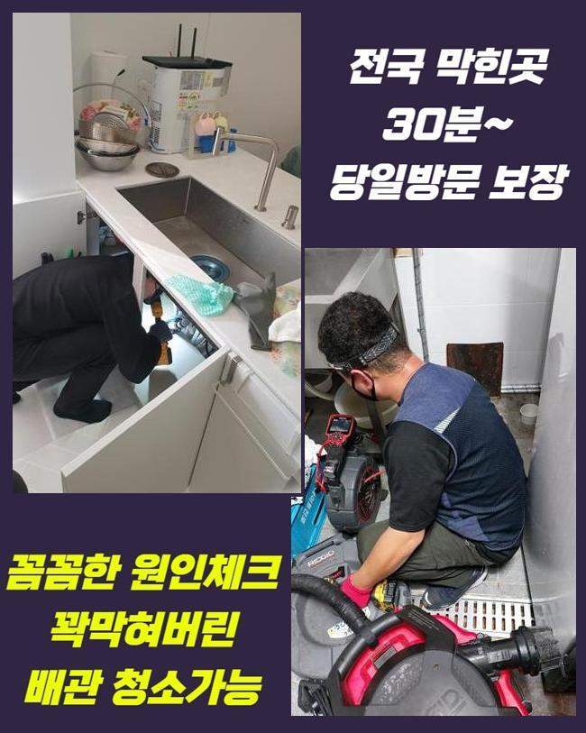
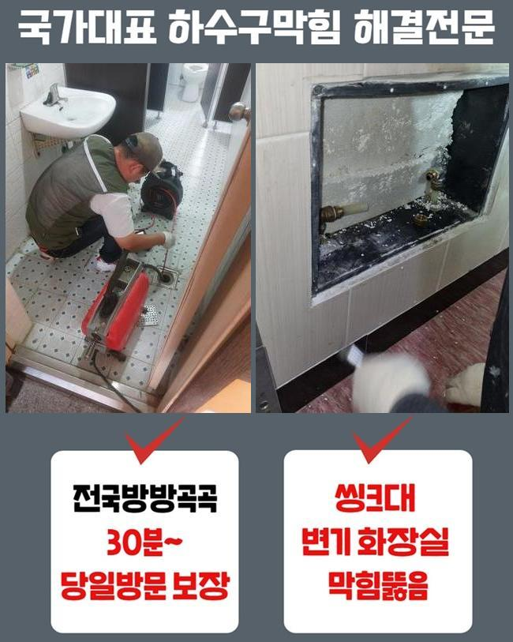
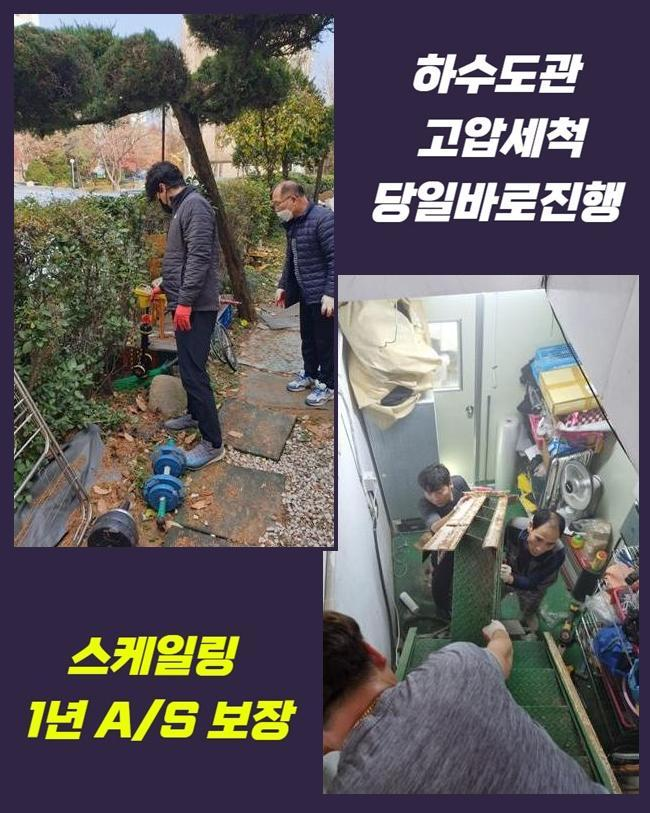
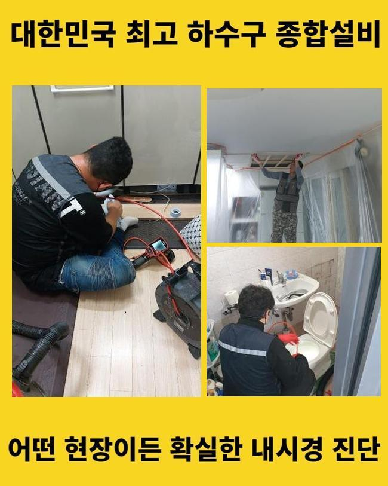
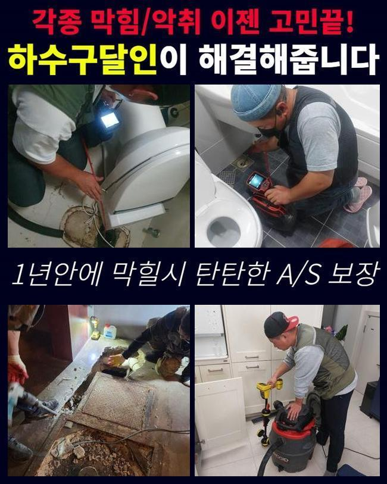

🏠 고양시 화전동씽크대배수관막힘 주교동 오수맨홀청소 누수탐지공사
고양 화전동 싱크대막힘 전문 시공 후기

📋 작업 개요
- 위치: 고양 화전동, 화전동, 고양
- 서비스 유형: 싱크대막힘, 하수구막힘, 배관막힘, 맨홀막힘, 누수수리, 역류해결, 뚫는업체, 배관청소, 고압세척, 설비공사
- 작업 일시: 2025. 5. 28. 15:00
- 업체명: 하수구수사대 (010-5615-2118)
🔍 문제 상황
고양시 화전동씽크대배수관막힘 주교동 오수맨홀청소 누수탐지공사
쉼의 공간이 되어야할 주거지에서 때때로 발발하는 트러블이 있답니다
대표로 배수구막힘을 말씀드릴수 있어요
물막힘이 생겨나면 오취가 퍼지는것을 비롯하여 일상의 고충을 증가시키죠
배관막힘으로 세탁기 등을 사용못하고 역류마저 나타난다면 정말 난감해지겠죠
금번에는 쓰리룸빌라에서 생긴 세탁실배수 고장으로 여러종류의 장비들을 써서 정리한 공정을 말씀드리겠습니다
고객께선 집안내의 세탁기 배수관에서 물막힘이 일어났다며 저희측으로 문의하셨는데요
시공차량에 플렉스샤프트와 석션장비 및 내시경설비를 갖추고 의뢰인의 댁으로 출발하였죠
당도하니 퀴퀴한 내가 진동을 하였고 이물들이 산재된 모습까지 관측할수 있었답니다
세탁기가동을 통하여 물빠짐을 시도하였지만 도리어 토출되는 사태가 발발하였다고 하소연하셨어요
버블만 토출되는게 아닌 여러종류의 침전물까지 배출되는 상황이었죠
일부의 시설에선 베란다와 싱크대의 하수관이 이어진 정황도 목격되는데요
그것 또한 진단해 보았어요
정체사태를 세밀하게 간파하려는 목적으로 의뢰인분에게 주방시설이나 타 배관이 막혔거나 역류증세는 없었는지를 확인해봤어요

🔎 원인 분석
💡 전문가 진단: 정밀 진단 장비를 사용하여 슬러지의 고착 여부를 판명하고 타격/세척 작업을 실시했습니다.
그저께 배수문제로 상점에서 구입한 구연산과 세제를 투입하신적이 있다 말하셨어요
그것에 기반하여 생각해보았더니 주방설비 부근의 배관에 막힘의 원인이 있을거라고 여겨졌어요
저희팀이 방문드린 장소의 정체를 해소하기 위하여 동기를 찾아내기로 하였답니다
배관내시경을 이용해 하수도안을 검사해보기로 결정했죠
안쪽이 혼잡할땐 방수성능이 있는 고속청소기로 관로의 오물들을 처리하게 됩니다
이런 과정을 바탕으로 시공시간을 줄일수가 있어요
세정중 다양한 슬러지와 미세물질이 방출되었답니다
그러나 해당공정만으로는 본질적인 정체이유가 어떠한 것인지에 대해 간파해내지는 못했죠
간단히 흡입기기로 소제할수 없는것들이 상당하였기에 즉시 배관내시경을 투입시켜 정체가 일어난 파이프를 검사해보기로 했죠
상태를 자세하게 조사하니 바닷가쪽에서 나오는 모래 성분이었답니다
빨래를 하는 과정에서 배출된 상황일 가망성이 높았죠
고객님에게 휴가를 다녀오셨나 물어보았더니 서해쪽 바닷가에 가셨다고 알려주셨어요
우선 눈에보이는 잔재들을 처치하고 한층 공격적으로 통수 공정을 속행하기로 했죠
그리고선 배수관 안쪽까지 소제가능한 장비들을 쓰기로 결정했죠

🔧 작업 과정
내시경cctv를 활용하는 까닭은 막힘의 사유를 세세하게 조사하고 정체를 처리하기 위함입니다
흡입장비로 세척을 끝내고 가느스름한 호스줄에 붙어있는 내시경을 사용하여 하수구 하단부를 조사해 보았어요
심층부까지 진단해보았고 본질적인 막힘원인을 알아낼수 있었습니다
이러하듯 관로막힘은 여러가지 변인들에 기인하여 생길수 있으며 해결책이 간단한것도 아니라고 말씀드려요
그렇기때문에 전문적인 기기들을 토대로 시공을 해나가야 원만하게 끝마칠수 있는거죠
혹시라도 엉성하게 정체사태를 정리하려든다면 한층더 정체가 심화될수 있단걸 꼭 기억해주세요
배관 내부를 배관카메라로 진단하였어요
관의 기장은 생각한것보다 긴편이고 모양도 다양해서 직시해서 검증하기에는 한계점이 있답니다
그러한 정황에선 길고 가는 내시경설비가 제몫을 해주고 있죠
내시경기기를 이용해서 내측을 자세하게 파악해보니 다양한 노폐물들과 흙성분들이 혼재되어 있었어요
이러한 고형물들은 수용성이 아니라 관로에 흡착하여 경화되기 쉽답니다
미세한 이물들은 배수가 되어서 오수탱크로 이동하겠지만 일시에 그 성분들을 투입시켜버린다면 이처럼 물막힘이 발발할수가 있어요
그것에 더하여 막힘이 지속된다면 관로에 이물막이 생성되기도 하죠
찌꺼기의 성질에따라서 쓰는 기기가 달라집니다
예시를 들어 헝겊등의 커다란 부피의 물체가 막혀있다면 쇠갈고리 등을 투입하여 끄집어낸 뒤에 흡입장비로 관로 안을 청소해야 됩니다
혹시라도 이러한 과정을 생략하고 그냥 분쇄진행을 해버린다면 하수관 내측이 한층더 혼잡해질수가 있는거죠
슬러지들이 더미형태로 상당량 상존할때는 인위적으로 파쇄하는 업무를 진행하게 됩니다
이장소는 돌맹이들과 뒤엉켜있어서 그걸 플렉스샤프트를 이용해서 분쇄시키고 뚫음을 시행하였죠
이곳에서는 전체 이물들을 소제하고 내시경설비로 다시금 점검을 하였어요
그후 잔류하는건 분쇄장비로 깨끗이 소제하고 즉각적으로 물내림 시험을 해보았는데요
이상없이 속시원히 소멸되는걸 목견하게 되었습니다
공사현장에서 토출된 지저분한 것들을 전반적으로 정리한뒤 치우는것으로 시공을 마무리하였죠


✅ 작업 완료
위의 정체문제를 사전적으로 막기 위해서는 정기적으로 하수구 진단해보았고 세척을 해야합니다
주방시설의 배수설비에선 기름슬러지가 막힘을 유발하고 역류를 일으킬때가 많아요
그럴땐 방치하지말고 곧바로 전문가를 찾아보시는게 합당합니다
일반인이 다룰수있는 범위는 본원적인 해결을 만들어내기 힘들며 문제상황이 한층더 악화되는 일도 빈번하기 때문이죠
배관업체의 분쇄작업이나 고압세척은 간략히 일과를 정상화시키는걸 넘어서서 청결성을 지속시키는데도 필수입니다
거기에 더해 막힘상황이 계속 방치되면 인접세대에도 곤란한 상황을 야기할수 있다는것을 인지해주시길 바라요




⚠️ 베란다 누수 및 방수 관리 방법
- ✅ 비가 많이 올 때 창틀 주변이나 아래층 천장에 얼룩이 생기는지 정기적으로 확인해 보세요.
- ✅ 우수관 주변 실리콘 마감이 들뜨거나 깨진 틈새가 있는지 손상 여부를 수시로 체크하세요.
- ✅ 베란다 바닥 타일의 줄눈(메지)이 소실되면 그 틈으로 물이 침투하여 누수가 유발됩니다.
- ✅ 누수 의심 증상 발견 시 방치하면 아래층 손실이 커지므로 즉시 전문가의 진단을 받으십시오.
💡 핵심 정리
- 확실한 장비 작업(내시경 점검 및 샤프트 스케일링)으로 원인을 뿌리 뽑습니다.
- 작업 후 1년 이내에 동일한 부위 재발 시 100% 무상 A/S 서비스를 보장합니다.
- 서울 · 경기 · 인천 전 지역에 24시간 언제든 긴급 출동할 수 있도록 항시 대기 중입니다.
❓ 자주 묻는 질문 (FAQ)
🚨 고양 화전동 싱크대막힘 문제로 고민이신가요?
정확한 원인 진단과 확실한 시공으로 재발 없는 해결을 약속드립니다.
24시간 긴급 출동 | 서울 · 경기 · 인천 전지역 | 1년 내 재발 시 무상 A/S